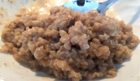
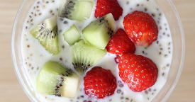
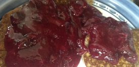
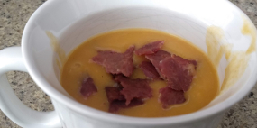
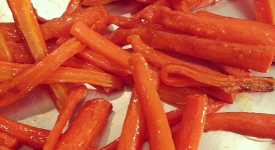
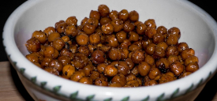
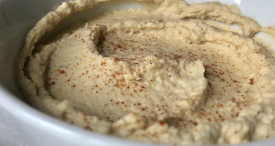
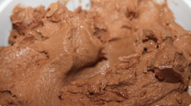
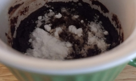

Peanut Butter Buckwheat
Category: Breakfast
Free of: oats, gluten, eggs, sugar, dairy

| prep time: 3 mins |
cook time: 5-8 mins |
total time: 8-11 mins |
Ingredients
- 1/4 cup cream of buckwheat cereal
- 1/2 cup water
- 1/4 cup + 2 Tbsp nut or coconut milk
- 2 1/2 Tbsp peanut powder
- 1 1/2 Tbsp erythritol (or sweetener of choice)
- 1/4 tsp maple extract
Directions
- Combine all ingredients in small saucepan with lid. (The sweetener and peanut powder probably won’t dissolve until heated)
- Heat on high. As soon as it starts boiling, reduce heat to low and cover
- Cook for 4-5 minutes stirring regularly.
- When it has thickened, remove from heat and serve. It will continue to thicken if not served immediately.
Note: I like to add some nut butter to mine for additional protein. You can also add a couple of tablespoons of protein powder or collagen before cooking. I recommend adding some additional liquid as well.
servings: 1
Chia Pudding
Category: Breakfast
Free of: oats, gluten, eggs, sugar, dairy, nut

| prep time: 3-5 mins |
fridge time: 2 hours |
total time: 3-5 mins + 2 hours |
Ingredients
- 2 Tbsp chia seeds
- 1/2 cup nut or coconut milk
- 1 tsp sweetener (many use honey or maple syrup for flavor)
- toppings like fresh fruit or nuts
Directions
- Add ingredients (except toppings) in a jar and mix well. Wait 2-3 minutes for it to settle and mix again so there is no clumping
- Cover jar and place in the fridge for at least 2 hours or overnight.
- Top with your favorite toppings and enjoy!
servings: 1
Buckwheat Pancakes
Category: Breakfast
Free of: oats, gluten, eggs, sugar, dairy, nut
| prep time: 5-10 mins |
cook time: 10 mins |
total time: 15-20 mins |
Ingredients
- 1/3 cup buckwheat flour
- 3 Tbsp nut or coconut milk (for nut-free)
- 1/4 cup applesauce
- 1 tsp melted butter or coconut oil (for dairy-free)
- 1 Tbsp erythritol
- generous 1/2 tsp baking powder
- dash of vanilla extract (optional)
Directions
- Mix all ingredients in a mixing bowl.
- Heat a frying pan and spray wth coconut oil spray or use melted butter. Make sure the pan is fully heated.
- Meaure 1/4 cup batter for smaller pancakes (egg rings make the perfect size). Cook for about 1 - 1 1/2 minutes. Make sure the bottoms are pretty well cooked before flipping or the pancakes will fall apart.
- Flip the pancakes over. It helps to get the spatula under most of the pancake before flipping. Cook for another 1-2 minutes until fully cooked.
servings: 1 (3-4 pancakes)
Other variations:
- To make waffles, use 2 tablespoons of aquafaba (liquid from garbanzo beans) instead of applesauce. Heat waffle iron, spray with oil, pour batter, and cook according to manufacturer's instructions. Makes 1 waffle.
- To make cocoa pancakes, exchange 1-2 tablespoons of buckwheat flour for 1-2 tablespoons of cocoa powder. Adjust sweetener as needed.
- Feel free to add berries, chocolate chips, or nuts to the batter.
- This makes one serving but can be doubled or tripled for family size. They also freeze well for toasting later.
Fruit Compote
Category: Breakfast
Free of: oats, gluten, eggs, sugar, dairy, nut

| prep time: 3-5 mins |
cook time: 10-15 mins |
total time: 13-20 mins |
Ingredients
- 1/2 cup frozen fruit (berries, mixed fruit, etc)
- 1 cup water
- 3-4 Tbsp erythritol (or other sweetener)
- 1-2 tsp xanthan gum or gluccomanan (thickening agent)
Directions
- Place fruit, water, and erythritol in a small sauce and bring to a boil. Continue to boil until frozen fruit is well cooked and falling apart.
- Slowly wisk in xanthan gum or gluccomanan and continue to simmer. Add more as needed until compote is desired consistency, usually like jelly.
servings: 2-3
Spiralized Sweet Potato Mexican Casserole
Category: Entrees
Free of: oats, gluten, eggs, sugar, dairy, nuts
| prep time: 20-25 mins |
cook time: 1 hour |
total time: 1 hour, 20-25 mins |
Ingredients
- 1 lb boneless skinless shredded cooked chicken
- 2 medium sweet potatoes, spiralized
- 1 jar pizza sauce
- 1/2 jar salsa (optional)
- 1 cup water
- 1 tsp olive oil
- 1 onion, cut into quarters
- 4 minced garlic cloves
- 1 Tbsp chili powder
- 1/4 tsp crushed red pepper
- 1/4 tsp dried oregano
- 1/4 tsp garlic powder
- 1/4 tsp onion powder
- 1/2 tsp paprika
- 1 1/2 tsp ground cumin
- 1 1/4 tsp salt
- 1/8 tsp pepper
- 1 cup frozen corn
- 1 (15 oz) can black beans, rinsed and drained
- 5 oz shredded cheese (optional - leave out for dairy-free)
Directions
- Preheat oven to 400℉. Spiralize sweet potatoes (recommend smallest noodle blade) and place in 9x13 casserole dish.
- Place shredded chicken in large mixing bowl. Add sauce, salsa, water, black beans, corn, and seasonings to the bowl.
- In a medium skillet, heat the oil at medium-high heat. Add garlic and onions and saute until browned. Add to the bowl.
- Mix ingredients in bowl. Pour over the spiralized sweet potatoes, making sure the sauce mixes well and gets in between the spirals.
- Top with cheese, if using. Cover with aluminium foil and bake for an 1 hour, or until the sweet potatoes are tender.
Notes:
- To vary the spiciness, choose a mild or hot salsa.
- Salsa and cheese can also be added to individual bowls after baking.
servings: 4-6
Turkey Chili
Category: Entrees
Free of: oats, gluten, eggs, sugar, dairy, nuts
| prep time: 25-30 mins |
cook time: 50-60 mins |
total time: 1 hour, 15-30 mins |
Ingredients
- 2 lb ground turkey
- 2 medium sweet onions
- 2 carrots
- 4 celery stalks
- 1 sweet potato (optional)
- 2 garlic cloves, minced
- 2 Tbsp avocado oil
- 1 tsp salt
- 2 tsp black pepper
- 3 Tbsp chili powder
- 2 Tbsp ground cumin
- 1 tsp Italian seasoning
- 1/4 tsp crushed red pepper
- 14oz can pureed or crushed tomatoes
- 32oz vegetable or chicken stock
- 16oz can black beans, rinsed and drained
- 1/2 cup corn
- 16oz can garbanzo beans, rinsed and drained
- 16oz can white beans, rinsed and drained
Directions
- Brown meat and drain (to get rid of excess fat, rinse under hot water). Set aside for later.
- Chop onions, celery, sweet potato, and carrots. Add to stock pot with oil and garlic.
- Saute over medium heat until vegetables are soft, about 10 mins.
- Add salt, pepper, chili powder, cumin, red pepper, and Italian seasoning. Saute another 2 mins.
- Add the rest of the ingredients. Stir well and simmer for 45 mins.
Notes:
- To vary the spiciness, decrease or increase the chili powder, black peper, and red pepper.
- If you prefer more tomato in your chili, add a can of dice tomatoes or more crushed tomatoes.
- This can also be cooked in the crock pot. Decreased the stock to 8-16oz. At step 5, transfer to crockpot, add the rest of the ingredients, and cook all day on low.
servings: 4-6
Balsalmic Tenderloin
Category: Entrees
Free of: oats, gluten, eggs, sugar, dairy, nuts
| prep time: 10-15 mins |
cook time: 4-6 hours |
total time: 4-6 hours, 10-15 mins |
Ingredients
- 2-3 lb boneless tenderloin, pork or beef
- 1 cup chicken or vegetable broth
- 1/2 cup balsalmic vinegar
- 1 Tbsp Worcestershire sauce
- 1 Tbsp tamari sauce or coconut aminos
- 1/2 tsp red pepper flakes
- 2 cloves garlic, minced
- 1 Tbsp honey
Directions
- Place tenderloin in slow cooker.
- In 2-cup measuring cup, mix together the remaining ingredients, except the honey. Pour over the tenderloin.
- Pour the honey over the tenderloin. It will melt and mix with sauce while cooking.
- Cook on low for 6 hours or high for 4 hours.
- Once cooked, move the tenderloin to a serving dish. Break apart lightly with 2 forks and ladle gravy over it. Serve warm.
Notes:
- To vary the spiciness, decrease or increase the red pepper flakes.
- If this is too vinegary for your taste, decrease the balsalmic vinegar to 1/4 cup and increase Worcestershire sauce and tamari to 3-4 Tbsp each.
servings: 4-6
Butternut Squash & Sweet Potato Soup
Category: Entrees
Free of: oats, gluten, eggs, sugar, dairy, nuts

| prep time: 10-15 mins |
cook time: 6-7 hours |
total time: 6-7 hours, 10-15 mins |
Ingredients
- 2 cans white beans, rinsed and drained
- 1 (10- to 12-ounce) bag frozen riced cauliflower
- 1 (12- to 16-ounce) bag frozen cut butternut squash (or one medium butternut squash chopped into small cubes)
- 1 (12- to 16-ounce) bag frozen cut sweet potatoes (or one large sweet potato peeled and chopped into small cubes)
- 1 (10- to 12-ounce) bag frozen chopped onion (or 1 large onion, quartered)
- 8-10 cups just off the boil water
- a few squirts Bragg liquid aminos or coconut aminos (optional)
- 4 minced garlic cloves
- 1 tsp black pepper
- 1 tsp onion powder
- 1/2 tsp mesquite liquid smoke
- a few dashes of red pepper to taste
- 1 1/2 tsp xanthan gum or gluccomanan
- 2-2 1/2 tsp salt
- toppings such as cooked turkey bacon, cooked bacon, or roasted pumpkin seeds
Directions
- Place everything except xanthan gum/gluccomanan, salt, and toppings in slow cooker. Cook on high 6-7 hours
- Add xanthan gum or gluccomanan and salt to the crockpot and use an immersion blender to blend everything into a smooth soup. Please note, the soup is very hot so be careful not splatter. Another option is to scoop out some of the ingredients and blend in blender. Hold the lid on tight since it will be very hot.
- Taste and add more salt and red pepper as needed.
- Top servings with turkey bacon, bacon, or roasted pumpkin seeds.
Note: For added protein, add some protein powder or collagen to the hot water before adding to the soup.
servings: 6-8
Carrot Fries
Category: Snacks/Sides
Free of: oats, gluten, eggs, sugar, dairy, nuts

| prep time: 10 mins |
cook time: 20-25 mins |
total time: 30-35 mins |
Ingredients
- 1 lb carrots
- 2 Tbsp avocado oil (or oil of choice)
- 1 tsp salt
- 1 tsp pepper
- Seasonings of choice (optional)
Directions
- Preheat oven to 400℉. Make sure the oven is fully preheated before inserting the pan.
- Wash, peel, and cut carrots into sticks. The thinner the carrots, the more flavorful the carrot fries. Put them in a bowl.
- Toss in oil and salt and pepper.
- (Optional) Add any other desired seasonings such as paprika, garlic salt, rosemary or nutritional yeast.
- Place parchment paper on a large cookie sheet. Lay out the carrot sticks on the pan. Spread them out as much as possible.
- Bake in preheated oven for 20-25 minutes. Its best to bake them in a hot oven so that the carrots release their juices which will be instantly carmelized. This will crispen the fries.
servings: 2-4
Jicama Fries
Category: Snacks/Sides
Free of: oats, gluten, eggs, sugar, dairy, nuts
| prep time: 15-20 mins |
cook time: 40-45 mins |
total time: 55-65 mins |
Ingredients
- 1 large jicama (or pre-cut jicama spears)
- 1-2 Tbsp avocado oil
- Seasonings of choice (I recommend paprika, garlic powder, onion powder, and nutritional yeast)
Directions
- Preheat oven to 400℉ (if using oven instead of air fryer).
- Cut skin off of the jicama and chop jicama into fries no longer thicker than 1/4 inch.
- Toss in oil and seasonings.
- If using the oven, spread out on cookie sheet and cook for 35-40 minutes. Toss fries halfway through.
- If using an air fryer, fry at 400℉. Toss every 5 minutes until fully cooked (about 35-40 minutes).
servings: 1-2
Roasted Garbanzo Beans
Category: Snacks/Sides
Free of: oats, gluten, eggs, sugar, dairy, nuts

| prep time: 5-10 mins |
cook time: 30-35 mins |
total time: 35-45 mins |
Ingredients
- 1 can garbanzo beans, rinsed and drained
- 1 Tbsp avocado oil
- Seasonings of choice (such as nutritional yeast, taco seasoning, ranch seasoning, etc.)
Directions
- Preheat oven to 375℉. Put parchment paper on a large cookie sheet.
- Toss garbanzo beans in oil and seasonings of choice. Spread out on cookie sheet.
- Bake for 30-35 minutes. Toss/stir garbanzo beans every 10 minutes.
- After cooling, store in airtight container for up to a week.
servings: 1-2
Hummus
Category: Snacks/Sides
Free of: oats, gluten, eggs, sugar, dairy, nuts

| prep time: 10-15 mins |
cook time: N/A |
total time: 10-15 mins |
Ingredients
- 2 cans garbanzo beans, rinsed and drained
- 1/2 cup tahini
- 1 tsp ground cumin
- juice of 1 lemon
- 1 Tbsp olive oil
- 1 tsp salt
- 1-2 cloves garlic
- 1/4 - 1/2 cup water
- (optional) seasonings for other flavors: jalapeños, crushed red pepper, extra garlic, etc.
Directions
- Put all ingredients, except water and optional seasonings, in a food processor and process well. It will look dry.
- Add water a little at time and process. Continue until at desired consistency.
- Taste and add seasonings for desired flavor.
- Store in airtight container in the fridge for up to a week.
servings: 8-10
Chocolate Muffins
Category: Desserts
Free of: oats, gluten, eggs, sugar, dairy, nuts
| prep time: 10-15 mins |
cook time: 11-12 mins |
total time: 21-27 mins |
Ingredients
- 1 1/2 cups buckwheat flour
- 1/2 cup unsweetened cocoa powder (recommend 1/4 cup dark and 1/4 cup regular)
- 3/4 cup erythritol
- 1/3 tsp salt
- 1 1/2 tsp baking powder
- 1/2 tsp baking soda
- 7 Tbsp aquafaba - see note below (or 3 large egg whites if not egg-free)
- 1 cup unsweetened applesauce (or plain Greek yogurt if not dairy-free)
- 1/2 cup water
- 1 1/2 tsp vanilla extract (optional)
Directions
- Preheat the oven to 350℉. Lightly coat muffin tins with oil spray or use parchment paper muffin liners.
- Combine all ingredients in a large mixing bowl and mix well.
- Spoon batter into muffin holes (1/4 - 1/3 cup in each...they will rise when baking).
- Bake 11 to 13 minutes. Muffins may be a spongy. If using aquafaba, this is fine. If using eggs, check the centers of several muffins with a toothpick to ensure they come out clean.
Note: Aquafaba is the liquid from garbanzo beans. A can of garbanzo beans contains about 1/2 cup of aquafaba.
servings: 12-14 muffins
Chocolate Ice Cream
Category: Desserts
Free of: oats, gluten, eggs, sugar, dairy, nuts

| prep time: 5-10 mins |
freeze time: 20-25 mins |
total time: 25-35 mins |
Ingredients
- 38oz almond milk (or coconut milk for nut-free)
- 1/2 cup erythritol
- 3-4 pinches of salt
- 1 1/2 Tbsp tahini (or heavy cream if not dairy-free)
- dash vegetable glycerin (optional - adds sweetness and helps ice-cream not stick to ice-cream maker)
- 1/3 cup cocoa powder
- 1 tsp xanthan gum or gluccomanan
Directions
- Blend all ingredients in a large blender. Add the xanthan gum or gluccomanan last to avoid clumping.
- Pour in to ice cream maker and churn for 20-25 minutes.
servings: 4-5
Brownie in a Mug
Category: Desserts
Free of: oats, gluten, eggs, sugar, dairy

| prep time: 8-10 mins |
cook time: 1 min |
total time: 9-11 mins |
Ingredients
- 1 Tbsp coconut oil
- generous 3 Tbsp unsweetened almond milk
- 1/2 tsp vanilla extract (optional)
- 1 1/2 Tbsp unsweetened cocoa powder
- 1 Tbsp erythritol
- 1 Tbsp coconut flour
- 1 1/2 Tbsp almond flour
- 1/4 tsp baking powder
- 2 pinches salt
Directions
- Melt coconut oil in microwave-safe mug. A larger mug is recommended. Stir in almond milk and vanilla extract, if using.
- In a small bowl, mix the dry ingredients well. Add the dry ingredients to the mug and mix thoroughly.
- Microwave for 45 seconds. It should puff up a bit. This will actually look more like brownie batter than a solid brownie. You can microwave a bit longer but not more than a minute.
servings: 1
>
Coconut Whipped Cream
Category: Desserts
Free of: oats, gluten, eggs, sugar, dairy, nuts
| prep time: 5 mins |
fridge time: 1-2 days |
total time: 5 mins & 1-2 days |
Ingredients
- 1 13.5oz can full-fat coconut milk (must be full fat)
- 1 Tbsp sweetener (honey, maple syrup, powdered erythritol)
- 1 tsp vanilla extract (optional)
Directions
- Put the coconut milk in the fridge for 1-2 days. The cream and liquid will separate.
- Chill the mixing bowl in the fridge for 15 minutes.
- Open the can of coconut milk and scoop the hardened cream into your bowl. Set the liquid aside to use as coconut milk in other recipes. I like to open the can upside down, so I can pour out the liquid. DON’T shake the can.
- Add the sweetener. Using a hand mixer or stand mixer, mix the cream until stiff peaks form.
- Enjoy with some fresh fruit or on top of another dessert. This whipped cream can be stored in a sealed container in the fridge for one week.
servings: 2-4